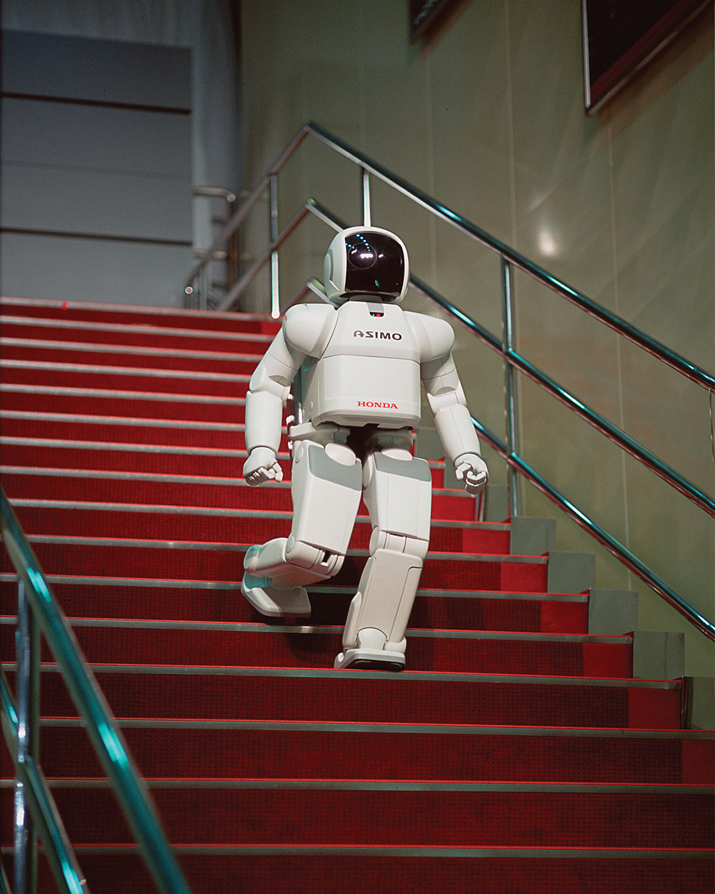

IT Technologies
Robots
Paragraph one
Paragraph two
Paragraph three
Robots are a machine that is controlled by a computer to complete tasks, sometimes complex. Robots can be controlled by a human user or by an artificial intelligence or AI. Robots have come to fulfill tasks in many industries, such as:
- Automotive
- Military
- Medical
- Packaging
- Mass production
- Agriculture.
One of the earliest robots was a stationary hydraulic lifting arm, called the Unimate, invented in 1954 by American engineer George Devol. This was then developed by a company name Unimation in 1956. 1961 saw the first line of Unimate hydraulic arms delivered to general motors factories which had the task of stacking and removing hot metal parts from a die-casting machine. Other types of robots are UAVs or Unmanned Aerial Vehicle. These robots are often controlled by a user from the ground and a used in the military and by civilians. UAVs range in all sizes from small children’s toy drones to the Taranis demonstrator a UCAV (Unmanned Combat Aerial Vehicle) with a maximum take off weight of 8000KGs.
UAVs use inertial sensors to correlate information and for object avoidance. The small drones are powered by a lithium-polymer battery while the larger drones are powered by hydrogen fuel cells. They rely on software referred to as the flight stack, this will gather and correlate the data from the inertial sensors, mission planning, aid ground control and control the motors. The real time computing is done by SBCs like Raspberry Pis and shielded by a PXFmini, an open autopilot.
UAVs can be used for to help farmers with many tasks and make farming more efficient. One instance of this is water and fertilizer efficiency, equipped with a thermal imaging camera or sensor, the drone will be able to see what ground areas need watering and fertilizer and what areas don’t, this allows for less wastage and better coverage of resources. They can be programmed to follow a map drawn by the user, allowing farmers to scout more of their crops, and even hard to reach places a lot quicker. They can also spray and seed their crops all from the comfort their back porch. UAV technology is something that is constantly undergoing development and innovation. With everything they can do now there is a few logical improvements that I can personally think of, these would include:
- better battery systems and charging capabilities.
- strengthened construction with lighter weight materials.
- Improved actuators.
Development of all-solid-state lithium-ion batteries generate longer battery life with more cycles. All-solid-state lithium batteries have in the past been prone to losing life quickly and sometimes even combustion. A battery of this type is currently being developed by Samsung, and they have successfully created an all-solid-state battery that has 900 watt-hours per litre and can survive through more cycles. Super Magnesium Alloy would be a perfect material for the skeletal components, actuators and outer casing of a robot. It is lighter and stronger than aluminium and cheaper to make than carbon fibre. It is also largely resistant to corrosion and wear and tear. The actuators can be improved by making them out of Super Magnesium Alloy. Depend on the type of robot the actuators could even be replaced by artificial muscles; this allows the robots to move with the same ease as humans.
The impact of robots in society has certainly had a positive effect in many aspects. We have all been affected by robots or robotics in some sense in our day to day lives. From the humble Roomba vacuuming floors to the automated hydraulic arms working in factories. Robots help us to do tasks either too difficult or overly repetitive. As the progression goes on there will be more robots in our society, this will have different effects on society.
I personally believe that robots will have both positive and negative effects. It has the potential to be helpful many people and at the same time replace many of the jobs lower socioeconomic class people rely on. Truck driving could easily be replaced by autonomous vehicles, this is the negative whereas the positive is that companies and warehouses will be able to move stock over long distances more efficiently eliminating the need for breaks. There can be many positive effects from implementing more robots into our society, much like a science fiction movie, they would be able to assist us in our day to day lives, such as helping the elderly with menial chores.
There are a few types of jobs that will never truly be able to be replaced by robots and those are jobs that require moral decisions and jobs that require creativity. An example of a moral decision job would be a judge of a court of the legal justice system, while a robot could learn the ins and outs of the legal system it would not be able to make a moral decision regarding punishment or reconciliation for an individual.
I believe that robots and advancement in robotic technology will have a positive effect on mine and my family’s day to day lives. Like I stated in the previous section, robots can do menial and tedious repetitive jobs and tasks, allowing more time for things deemed more important by the individual person, I personally wouldn’t mind a robot taking care of my chores while I focused on other responsibilities, study and work or entertainment and my family. Robots would also be able to assist my elderly relatives to a more independent style of living, rather than being moved into a retirement home, a robot could handle the tasks of cleaning and carrying groceries, or running errands that would have been deemed too difficult for someone of a more frail state.
Drones have also been used in delivery of supplies to rural Australians living within 10ks of the drone’s home base. As this technology develops it will be more accessible to the everyday person with packages and online shopping orders delivered right to your door. This would also help with accessibility for elderly citizens. I personally believe in the great potential that robots and further development of robotics. A potential only limited by our imagination. Robots can make life easier for humans in all aspects, an example would be if you could order a self-driving car, similar to uber only it’s a fully autonomous vehicle that can safely deliver you to you destination, or perhaps even a drone can fly you can fly you to your destination. Leaving fewer room for error, robots can safely operate in our society and assist us, in a means to a longer and less stressful life, and a further advancement in society as a whole.
Autonomous Vehicles
Sub heading

Ener info here
Sub heading
Ener info here